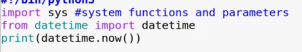

- ---sys is used for a lot of things--- ---notice as dt, creates a shortname---

--------------------------------------------------------------------------------------------------------------------------------------------------------------------------------------
Sockets --> connectin to an open port and ip address / connecting 2 nodes
Example Code:
--------------------------------------------------------------------------------------------------------------------------------------------------------------------------------------
import socket
HOST = '127.0.0.1'
PORT = 6666
s = socket.socket(socket.AF_INET, socket.SOCK_STREAM) // socket.AF_INET --> IPV4 //socket.SOCK_STREAM --> port
s.connect((HOST,PORT)) // in theory I could just s.connect((127.0.0.1, 6666))
--------------------------------------------------------------------------------------------------------------------------------------------------------------------------------------
 ---> Establishes python3
---> Establishes python3